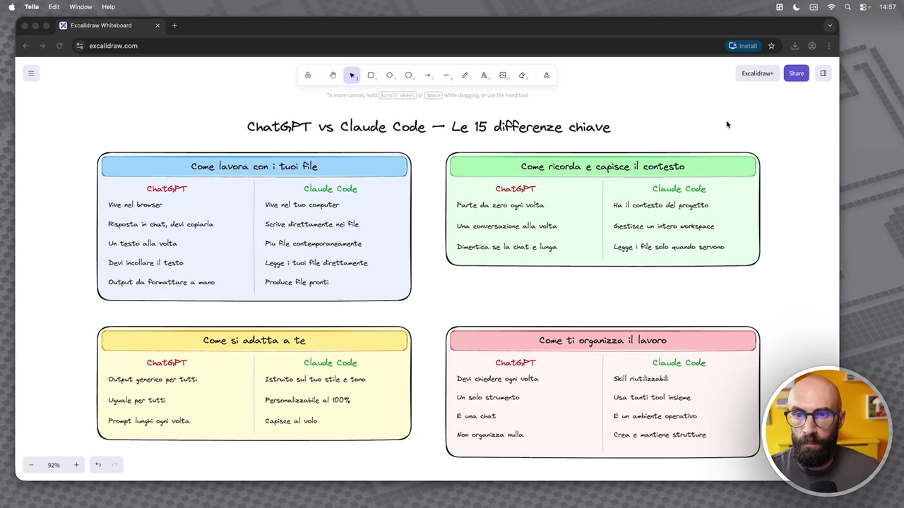
OCR: @ Tola Edit Window Chat6PT vs Claude Code — Le 15 differenze chiave 3 r- Come lavora con i tuoi file Come ricorda e capisce il contesto Chat6PT Claude Code ChotePr Claude Code Vive nel broser Vive nel tuo computer Parte da zero ogni volta Ha il contesto del progetto Risposta in chat; devi copiarla Serive direttamente nei Ale Una conversazione alla volta Gestisce un intero vorkepace Un testo alla volta Piu Ale conterpormennerte Dinentica se la chat e lunga Legge i Ble solo quando servono Devi elle testo Legge | fui Ale deettanente S Output da formattare a mano Preduce le pronti Come si adatta a te (C Come ti organizza il lavoro È nathPT Claude Code Istruito sul tuo stle e toro Dei chiedere ogni volta Sl itizzeldi Claude Code Prisiai al 100% Un solo strumento Uta tanti tool iniene. cea E a det E va aubiente operativo Hon organizza vu Crea e manticre strutture \
Voglio subito farvi vedere quali sono le differenze principali tra Cloud Code come strumento, come ambiente e invece l'utilizzo tradizionale dell'intelligenza artificiale generativa attraverso i chatbot. Io qua ho scritto CRGPT contro Cloud Code. Ovviamente CRGPT è giusto per farvi capire, ok? Ma non è che faccio riferimento a CRGPT, faccio riferimento a tutto quello che usavate prima di Cloud Code, quindi può essere CRGPT, anzi facciamo così, metto una nota, facciamo così, ho altri chatbot, così diciamo ve la ricordate questa cosa. Qui diciamo se voi al posto di CRGPT utilizzavate Gemini, utilizzavate Grok, utilizzavate non lo so, anche lo stesso Cloud ma dentro la chat o altri strumenti di questo tipo, la cosa che voglio far vedere innanzitutto è concettualmente le differenze quando andiamo ad utilizzare Cloud Code come ambiente, ok? Questa è una cosa importante che mi sentirete ripetere spesso.
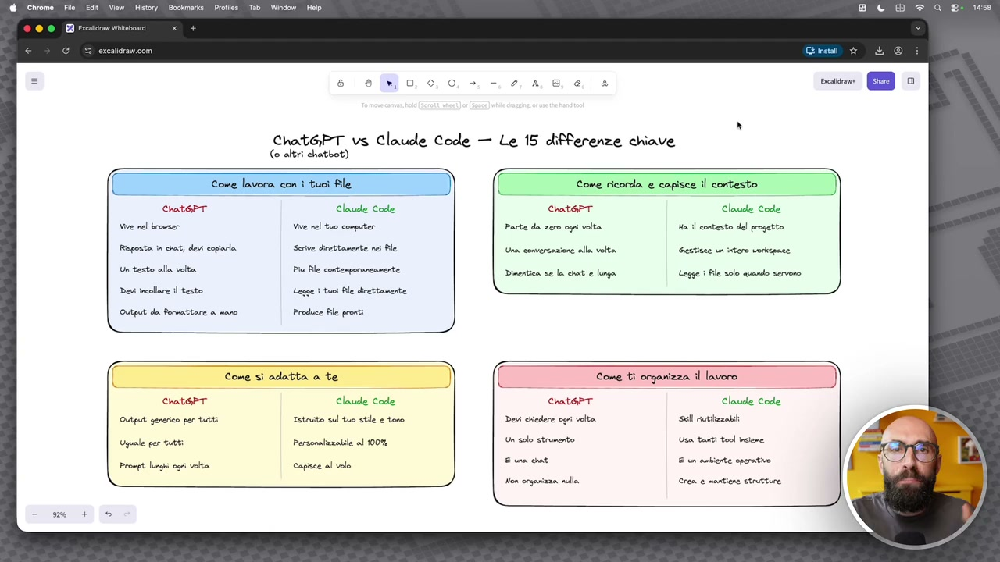
OCR: @ Chrome Fie Edt View History Bookmarks. Profiles Tab Window | Help 0° Bu Ghino Rain a Chat6PT vs Claude Code — Le 15 differenze chiave (o altrì chatbot) 4 Chat6PT Claude Code ChotePr Claude Code come lavora con i tuoi file D) ) Come ricorda e capisce il contesto vive nel broser Vive rel tuo computer Parte da zero ogni volta Ha il contesto del progetto. Risposta in chat; deri copiarla Serive direttamente nei Ale Una conversazione alla volta Gestisce un intero vorkepace Un testo alla volta. Piu Ale contenporanennente Dinentica se la chat e lunga Legge i file solo quando servono Devi calle testo Legge i tuci Ne decitanerte _ Output da Rormattare a mano Produce le pronti Come sì adatta a te Claude Code Claude Code Istruito sul tuo stle e toro Sl itiizzebti Personalizzabile al 100% Un solo strumento Usa tanti tool insiene. E via dat E va aubiente operativo capisce al velo fior orqerizza lla Gre e mantiene strutture L
Non vi preoccupate perché la parte così diciamo con la teoria, non sono manco slide, sono diciamo degli appunti che ho messo, sarà molto poco, però secondo me alcuni concetti teorici è importante saperli, poi ci toffiamo subito nella pratica. Qua ho provato a dividerli un po' per macro categorie. Partiamo con come lavora con i file. CRGPT e altri strumenti, altri chatbot, quindi ogni volta che leggete CRGPT pensate anche ad altri, quindi se uno di voi viene da anni di Gemini, questo ragionamento vale pure per Gemini, vivono nel browser principalmente, poi è chiaro che abbiamo l'app da mobile, l'app che si può installare su desktop, però come strumenti vivono nel browser. La grossa differenza con Cloud Code, che vedremo tra un attimo appena lo installeremo invece, è che vive sul computer, quindi è installato fisicamente sulla vostra macchina, questa è la prima cosa importante. Di conseguenza CRGPT e altri tool del genere cosa fanno? Rispondono in chat e quindi tutto quello che noi poi dobbiamo fare dopo dobbiamo
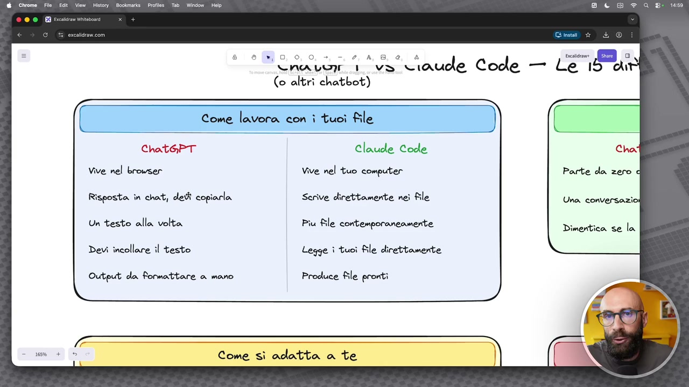
OCR: @ Chrome File Edit View History Bookmarks. Profiles Tab Window Help RI pacata Wintabonrd + 0, 0, 0, +, -, 2, A TNA LUI ve claude Code ini (o altrì chatbot) ChathPT vive nel browser Risposta in chat, devi copiarla Un testo alla volta Devi incollare il testo Output da Rormattare a mano Claude Code vive nel tuo computer Serive direttamente nei file Piu file contemporaneamente Legge ì tuoi file direttamente Produce File pronti Come sì adatta a te Le i An Cha: Parte da zero Una conversazio: Dimentica se la
copiare e incollare roba fuori dalla chat. Ovviamente adesso sono un pochino più avanzati perché ci generano degli artefatti, perché si possono collegare attraverso i connettori con il nostro Google Drive e così via, farci dei file da scaricare, però vivono dentro la chat. Invece quando andiamo ad utilizzare Cloud Code, siccome lavora in locale sulla macchina, tutto quello che fa è salvato direttamente in locale. CRGPT quindi ci può arrivare in qualche modo, perché mi fa il file Excel, poi io lo devo scaricare, me lo metto nella cartellina download e così via. Cloud Code ogni volta che fa qualcosa sta lavorando già sull'hard disk, sul nostro disco, sulla nostra macchina, ci troviamo i file. CRGPT è molto sequenziale, cioè facciamo una cosa alla volta, un file alla volta, una chat alla volta. Anche qui ci sono un po' di escamotage con i quali si riesce a fare più di una cosa per volta, però non nascono nativamente per quello. Invece con Cloud vedremo che si possono fare più sessioni in contemporanea, più file in contemporanea, diciamo è
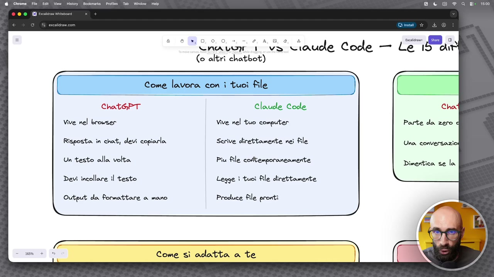
OCR: @ Chrome. File ge Edit View History Bookmarks Profiles. Tab- Window Help 0, 0, 0, +, -, 2, A NA LU 1 (o altrì chatbot) Se o ChathPT vive nel browser Risposta in chat, devi copiarla Un testo alla volta Devi incollare il testo Output da Rormattare a mano Claucle Code Cho: vive nel tuo computer Parte da zero Serive direttamente nei file Una conversazio: Piu file cosftemporaneamente Dimentica se la Legge ì tuoi file direttamente Produce file pronti Come sì adatta a te
molto più potente ed estendibile da questo punto di vista. E la questione della chat ovviamente vale anche al contrario, no? Qua ho detto devi copiarla, ma vale anche che devi incollare il testo. Invece Cloud Code, lavorando in locale, prende le cose direttamente dai nostri file, quindi abbiamo dieci preventivi che abbiamo fatto ai nostri clienti nei mesi scorsi, quando dobbiamo realizzare l'undicesimo lui va a leggere direttamente da questi preventivi, non dobbiamo trascinarli tutte le volte dentro le chat e dobbiamo fare copia e incolla di pezzi di testo. E poi diciamo c'è il GPT, tutto quello che dobbiamo prendere, se lo portiamo dentro PowerPoint, se lo portiamo dentro un file word, se lo portiamo dentro un documento di qualsiasi tipo, dobbiamo gestirlo manualmente. Cloud Code ovviamente ci dà dei file che sono già belli e pronti, possono essere PDF, possono essere varie cose, lo vedremo tra un attimo. Poi la parte di contesto, questa, vi prego, vi prego, vi prego, è la cosa più importante. Ovviamente mi rendo conto che all'inizio
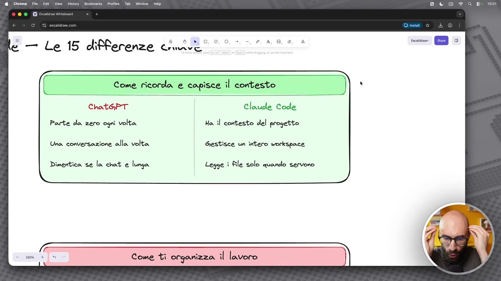
OCR: @ Chrome File Edit View History Bookmarks. Profiles Tab Window Help ° ga do + è) 0, 0, o. e — Le 15 differenze che Come ricorda e capisce il contesto Chat6PT Claude Code Parte da zero ogni volta Ha. il contesto del progetto Una. conversazione alla volta Gestisce un intero workspace Dimentica se la chat e lunga Legge i file solo quando servono Come tì organizza il lavoro
questo potrebbe essere un po' difficile, se qualcuno diciamo non ha praticità con questi concetti, fatemi mettere su guarda lo sfondo nero che mi piace di più, se uno non ha praticità con
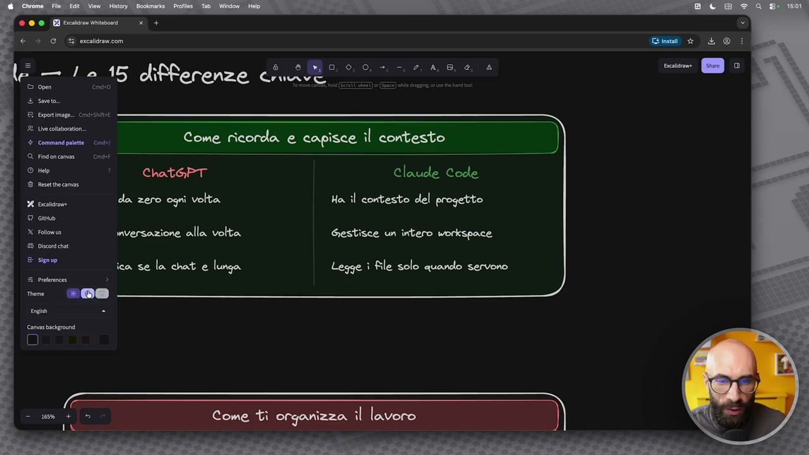
OCR: inv È Soto R Siportimage.. Cmcosbitee a cod Come ricorda e capisce il contesto @ Findoncamas | Cm SEI î Chat6PT Claude Code © retncanee n da zero ogni volta Ha. il contesto del progetto © cano x follows nversazione alla volta Gestisce un intero workspace 60 Disconichat E signup ica se la chat e lunga Legge î file solo quando servono
questi concetti, ma questo, noterete, è la prima differenza enorme, grande, rispetto agli strumenti che avete utilizzato fino ad oggi. Quando lavoriamo in modalità tradizionale chat a quando passiamo con questi strumenti invece agentici. Già il GPT parte tutte le volte da zero, anche diciamo Cloud, anche Gemini, anche Cowork e altri strumenti, no, non Cowork, perdonatemi perché Cowork è molto più simile a Cloud Code, però partono quasi sempre da zero. Anche qui abbiamo alcune funzionalità, tipo il fatto che si possono mettere le custom instruction, si possono mettere, diciamo, possiamo abilitare la memoria e quindi non lo facciamo partire proprio da zero, però diciamo che il grosso lo prende da zero ogni volta che facciamo una nuova chat. Invece Cloud Code ha il contesto del progetto. Questa è una cosa importante, una delle differenze più grandi, e qua lo vedrete anche qualitativamente nel tipo di output, è che Cloud Code lavora sul contesto. Il contesto che cos'è? Sono una serie di informazioni su di noi e sul nostro lavoro,
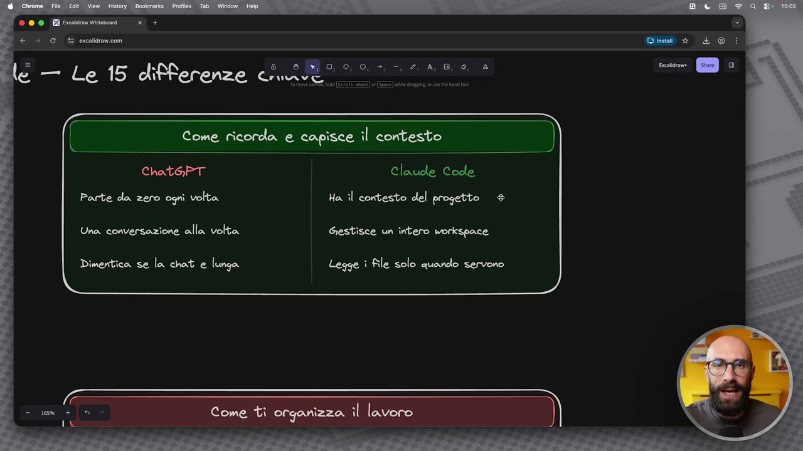
OCR: © 00 Bici + € è GE erceldravcon le — Le 15 differenze ch ( Come ricorda e capisce il contesto ChatGPT Claude Code Parte da zero ogni volta Ha il contesto del progetto ® Una, conversazione alla volta Gestisce un intero workspace Dimentica se la chat e lunga Legge ì file solo quando servono
sulla nostra persona, su, che ne so, i nostri task, i nostri progetti, il nostro ufficio, quello che vogliamo, che gli daremo noi, perché lo faremo insieme nel tempo. GPT gestisce una conversazione per volta, questo diciamo l'abbiamo accennato di là, diciamo nel boxettino precedente, ma questo vale anche per il contesto. Ovviamente, ripeto, abilitando la memoria possiamo fare che va a prendere informazioni da altre chat, no, però sono dei workaround e sono comunque limitati. Invece Cloud Code, lavorando all'interno di questo spazio di lavoro, che è appunto il workspace, che è una delle prime cose che creeremo, tutte le volte ha accesso al nostro workspace. Se quindi io ho una parte del, diciamo, della mia cartella di lavoro con i preventivi, poi un'altra parte di cartella dove, cioè un'altra cartella dove per esempio ci sono le presentazioni, io posso dire guarda, il cliente X la settimana scorsa ho fatto questa formazione, io ho fatto questo preventivo, ora c'è un cliente Y molto simile a questo, produce un nuovo preventivo. Lui in automatico può andare
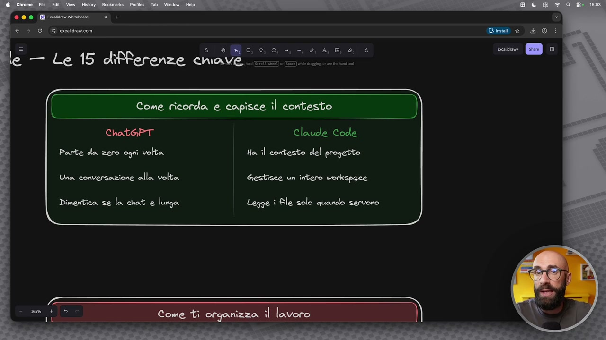
OCR: © 00 Bbc vino + € è G 5 ercelldravicom O, 0, O, >, —, 2, A, 8, d, & le — Le 15 differenze cave. Come ricorda e capisce il ‘contesto ) Chat@PT Claude Code Parte da zero ogni volta Ha il contesto del progetto Una conversazione alla volta Gestisce un intero workspace Dimentica se la chat e lunga Legge ì file solo quando servono
a leggere i preventivi precedenti, ma può andare a leggere anche le presentazioni precedenti. No, questo è il workspace, questa è la potenza di uno strumento del genere. Poi c'ha GPT, diciamo, c'ha GPT, ma anche Cloud e gli altri strumenti tradizionali in modalità chat hanno delle limitazioni, le chat troppo lunghe dopo un po' vengono perse, lo sapete, ve ne parlo da anni di questa cosa, però diciamo limitazione di contesto, limitazione di memoria e così via. Cloud Code invece cosa fa? In maniera dinamica e automatica e in modo intelligente va a leggere i pezzi di contesto che gli servono. Se quindi nel mio lavoro d'ufficio gestisco dieci clienti perché magari sono un formatore e sto lavorando solo sul cliente numero quattro, lui non si va a leggere il contesto di tutti gli altri clienti, ma caricherà in memoria solo il contesto del cliente numero quattro, farà tutte le operazioni che servono e non accederà mai agli altri file di contesto andando a bruciare memoria inutilmente. Alcune cose ancora importanti quali sono? Il come si
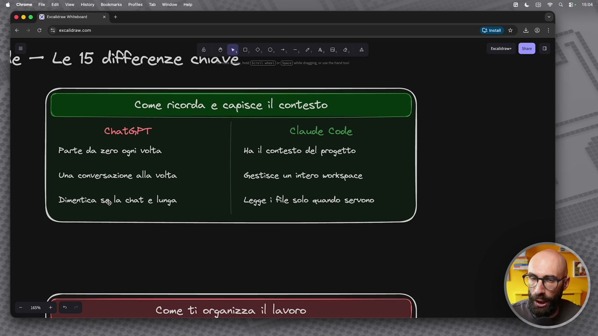
OCR: © 00 ocio + € è 0 E erceldramcom 0, è, 0, >, =, 2, A, 8, d, & le — Le 15 differenze cave. Come ricorda e capisce i contesto | Chat65PT Claude Code Parte da zero ogni volta Ha. îl contesto del progetto Una conversazione alla volta Gestisce un intero workspace Dimentica se la chat e lunga Legge ì file solo quando servono
adatta a noi. Diciamo gli strumenti di chat tradizionali hanno un output più generico, ripeto è chiaro che si può personalizzare un pochino con le custom instruction e così via, ma quando vedete il livello di personalizzazione che arriviamo con Cloud Code è proprio diciamo un altro livello, cioè non sono le due cazzatine in croce che gli dici allora io scrivo in tono informale e giovanile perché il mio pubblico sono i ragazzi sui social e così via, no? Che siamo abituati a scrivere, ripeto, le custom instruction dentro chat gpt oppure magari fare quei prompt molto lunghi dove definiamo il tono di voce e così via. Cloud Code questa cosa la fa super dettagliata, senza limiti, anche in modo dinamico e quindi io potrei avere 100 casi diversi perché magari state usando Cloud Code dentro un'agenzia, gestite 100 clienti e voi potete dire ok adesso
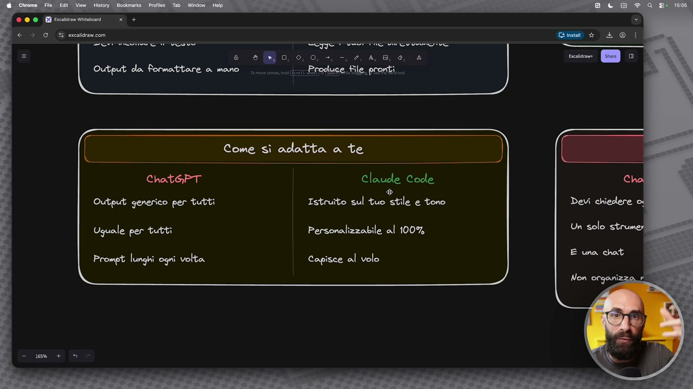
OCR: Come sì adatta a te Chat6PT Claude Code ® Output generico per tutti Istruîto sul tuo stile e tono Uguale per tutti Personalizzabile al 100% Prompt lunghi ogni volta Capisce al volo
caricami lo stile del cliente numero 4, caricami lo stile del cliente numero 42 e così via, no? Quindi in maniera molto molto dinamica. Anche qui diciamo uguale per tutti invece qua è tutto personalizzabile perché il mio workspace sarà diverso dal vostro workspace che sarà diverso dal workspace e dal contesto di chiunque altro, anzi poi nel corso di queste lezioni io vi farò vedere degli esempi, poi il grosso del lavoro sarà voi, cioè voi dovrete imparare a crearvi un contesto adatto alle vostre esigenze. Con chat gpt andiamo quindi a fare dei prompt molto lunghi e lo sapete perché avete visto i miei video, probabilmente avete fatto i miei altri corsi e così via e c'era tanto lavoro sul prompt engineering, più erano lunghi, più erano dettagliati, più informazioni c'erano, meglio era l'output, no? A volte avete visto anche dei miei prompt che erano tipo due pagine a quattro di prompt, con cloud code questa cosa va quasi a scomparire del tutto perché
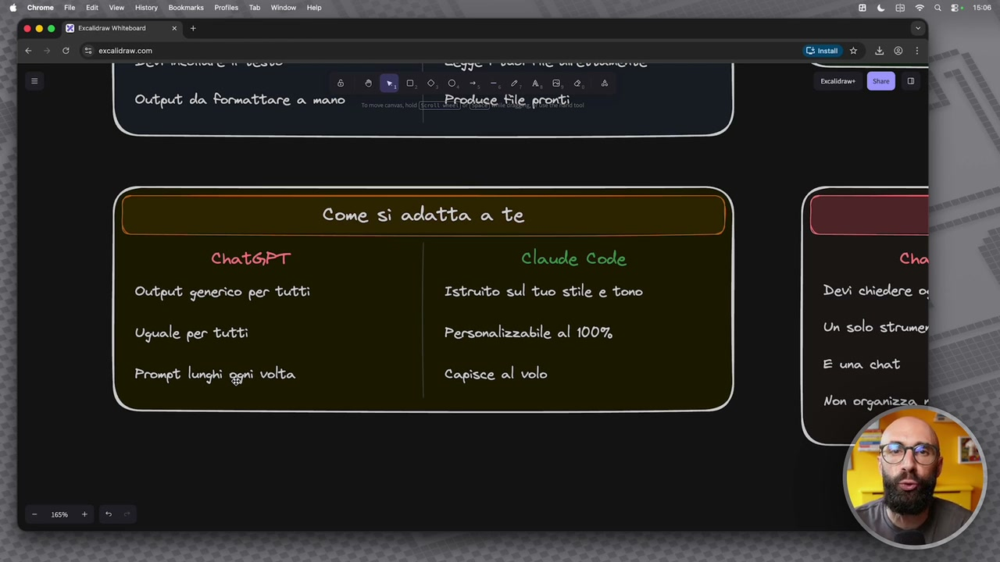
OCR: © 00 BI Scavo + € è G ® erceldravicom PETERSEN VESTO = e sMo oo, Output da Rormattare a mano... «ere Sepe Come sì adatta a te Chat6PT Claude Code Output generico per tutti Istruîto sul tuo stile e tono Uguale per tutti Personalizzabile al 100% Prompt lunghi agni volta Capisce al volo
ovviamente avendo il contesto non gli devo dire tutte le volte sto lavorando sul cliente x, il cliente x si occupa di automobili, sono una grossa multinazionale, no, gli dico sto lavorando sul cliente x, lui va in automatico nella cartella, dice ok il cliente x si occupa di automobili, sono una multinazionale, sono attivi su questi social, comunicano in questo modo, lo carica dinamicamente, capisce al volo quello di cui ho bisogno. E poi, diciamo, la parte di organizzazione del lavoro, c'è il gpt, fondamentalmente è una chat, quindi è botta e risposta, scrivo dei prompt, cosa posso fare con questi prompt, me li posso salvare, copiare e incollare, mi posso creare dei gpt, delle gemme, se uso Gemini e così via, ma queste cose non arrivano alla potenza delle skill, una delle cose più forti che vedremo all'interno di questo corso sono le skill, immaginate le skill come dei pezzi del vostro lavoro, ok, dei mattoncini che voi potete riutilizzare
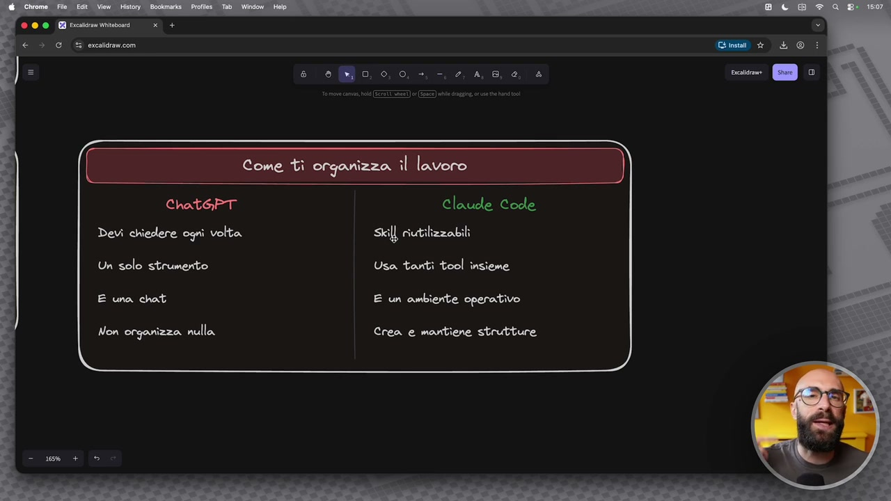
OCR: Chat&PT Devi chiedere ogni volta Un solo strumento E una chat Non orgarizza. nulla Claude Code Ski] riutilizzabili Usa tanti tool insieme E un ambiente operativo Crea e mantiene strutture
all'infinito, se voi nel vostro lavoro fate spesso un'azione, per esempio creare un preventivo, voi vi create una skill che crea i preventivi, se voi nel vostro lavoro fate spesso, che ne so, delle sessioni one to one con i clienti e dopo la sessione dovete sbobbinare tutta la registrazione della call, vi fate una skill che si chiama sbobbinami la registrazione della chiamata, se voi fate, che ne so, a inizio settimana una ricerca con le news di settore, vi fate una skill che si chiama news di settore, sono molto estendibili, sono molto personalizzabili, possono essere molto semplici o molto complesse, sono molto più potenti dei gpt, delle gm, di altre cose che avete visto in giro, mentre c'è gpt è fondamentalmente una chat, dentro c'ha delle funzionalità diverse, ok, quindi posso attivare il deep search, posso attivare, non so, la creazione d'immagini e così via, cloud code invece è una cassetta degli attrezzi, dovete immaginare proprio
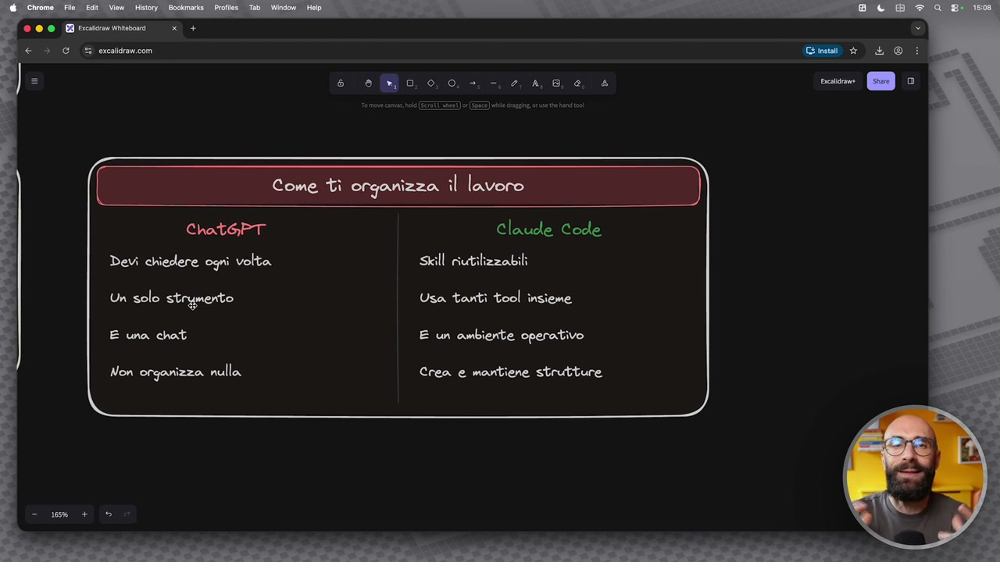
OCR: ChathPT Devi chiedere ogni volta Un solo strymerto E una chat Non orgarizza. nulla Claude Code Skill riutilizzabili Usa tanti tool insieme E un ambiente operativo Crea e mantiene strutture
in questo modo, infatti lo vedremo nel corso di questo corso, scusatemi sempre il gioco di parole, perché? Perché dentro ci sono vari tool, quindi posso usare delle funzionalità tipiche di cloud code o posso installare altre cose, non solo le skill, ma vedremo un sacco di cose che si possono installare, perdonatemi alcune di queste cose possono sembrare teoriche in questo momento, ma fra un attimo le vedremo in azione, capirete la potenzialità, però voglio subito fare, diciamo con questa parte introduttiva, farvi capire che si sta aprendo un nuovo mondo, cambierà il vostro modo di lavorare rispetto alle chat tradizionali, e infatti come ho detto chat gpt alla fine è una chat, cloud code dovete pensarlo invece come un ambiente, ci sono mille modi per chiamarlo, c'è chi dice è un ambiente, no, c'è chi dice è una cassetta degli attrezzi, è un coltellino svizzero, no, ci sono mille modi con i quali ormai viene chiamato cloud code, voi usate il modo che volete, che volete voi, però qua per farvi capire non è che state andando a sostituire chat gpt con un'altra chat, no, io vi sto dicendo noi andiamo
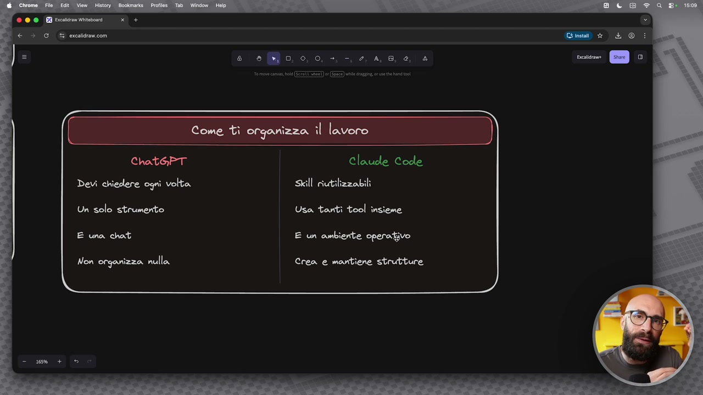
OCR: ChathPT Devi chiedere ogni volta Un solo strumento E una chat Non organizza nulla Claude Code Skill riutilizzabili Usa tanti tool insieme E un ambiente operativo Crea e mantiene strutture
a usare proprio un ambiente di lavoro diverso, dove ci sarà anche la chat, ma sarà diciamo per orchestrare poi che quello succede sotto diciamo il cofano, chat gpt diciamo non riesce a organizzare più di tanto, avete le chat, i progetti, delle cartelline, dei gpt, però diciamo tutto molto limitato, cloud code invece mantiene proprio delle strutture, perché lavorando sul vostro computer e avendo questo concetto del contesto e dello spazio di lavoro, voi potete avere tutte le cartelle organizzate come volete, se voi avete 100 clienti, voi vi fate la cartella clienti, poi sotto la cartella clienti ci potrebbe essere i clienti di moda, clienti di design, clienti di food, clienti di automotive, no, quelle sotto cartelle, dentro c'è pippo, pluto e paperino, oppure se voi avete un solo cliente, lavorate con una sola cartella e così via, potete farlo come volete voi, se siete un'agenzia, se siete un manager, se siete un professionista eccetera eccetera. Piccola parte introduttiva, fondamentale, adesso ci sporchiamo
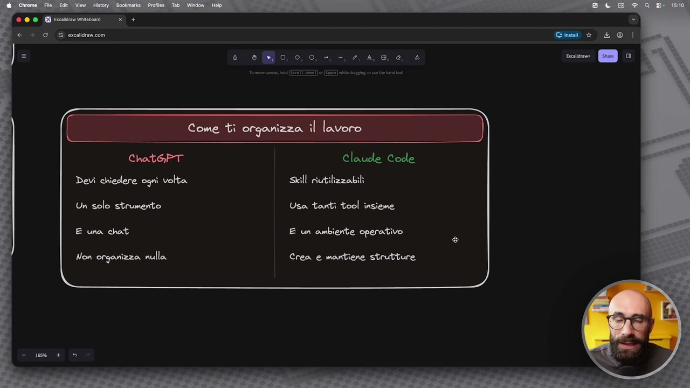
OCR: ChathPT Devi chiedere ogni volta Un solo strumento E una chat Non orgavizza. nulla Claude Code E un ambiente operativo Crea e mantiene strutture
subito le mani invece.